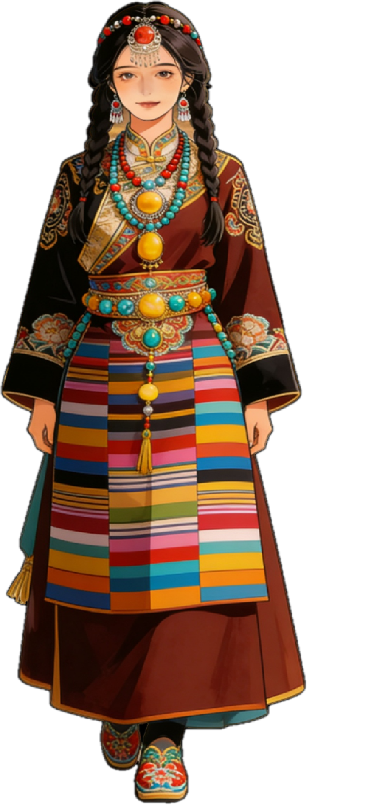
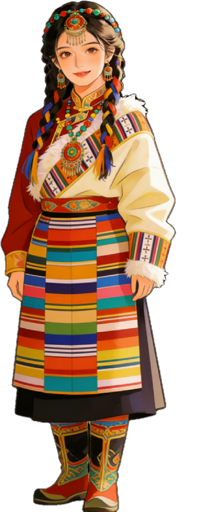

Tibetan Bangdian: Cultural Imprints of a Lifetime
As the iconic apron of Tibetan women, the Tibetan Bangdian is not only a clothing symbol carrying national aesthetics, but also deeply connected with women’s growth from a young girl to an elder. Every change and wearing of the Bangdian corresponds to the transformation of identity, the undertaking of responsibilities and the inheritance of culture.
Tap the characters below to listen to the stories of the Bangdian in different life stages




Maidenhood: First Wearing a Simple-Patterned Bangdian, Awakening Cultural Awareness
Age: About 12–15 years old
This stage is the "First Bangdian Wearing Ceremony" for Tibetan girls, marking the transition from childhood to maidenhood. The Bangdian worn by young girls mostly features fresh colors such as pale white and light blue, with simple and elegant patterns, usually a small number of whirl patterns and cross patterns. The ceremony of wearing the Bangdian is the beginning for elders to teach Tibetan clothing culture and etiquette to young girls. While learning to tie the Bangdian, girls begin to recognize their cultural identity as Tibetan women and develop reverence for ethnic traditions.
- Colors: Fresh colors such as pale white and light blue
- Patterns: Simple and elegant, with a small number of whirl patterns and cross patterns
- Significance: First understanding of ethnic and cultural identity, and fostering reverence for traditions